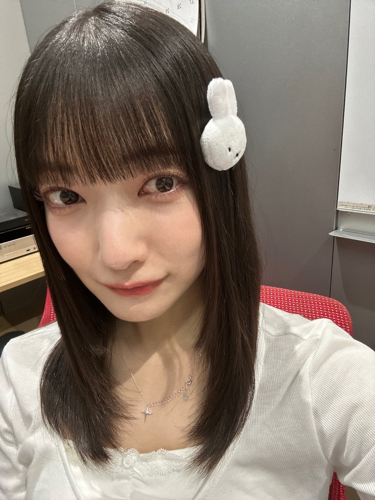
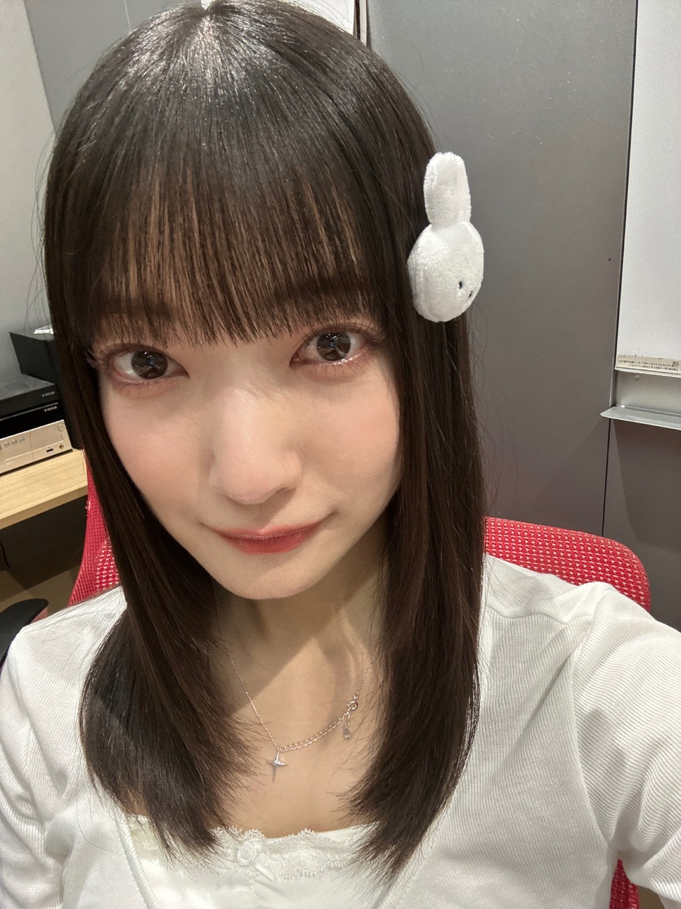
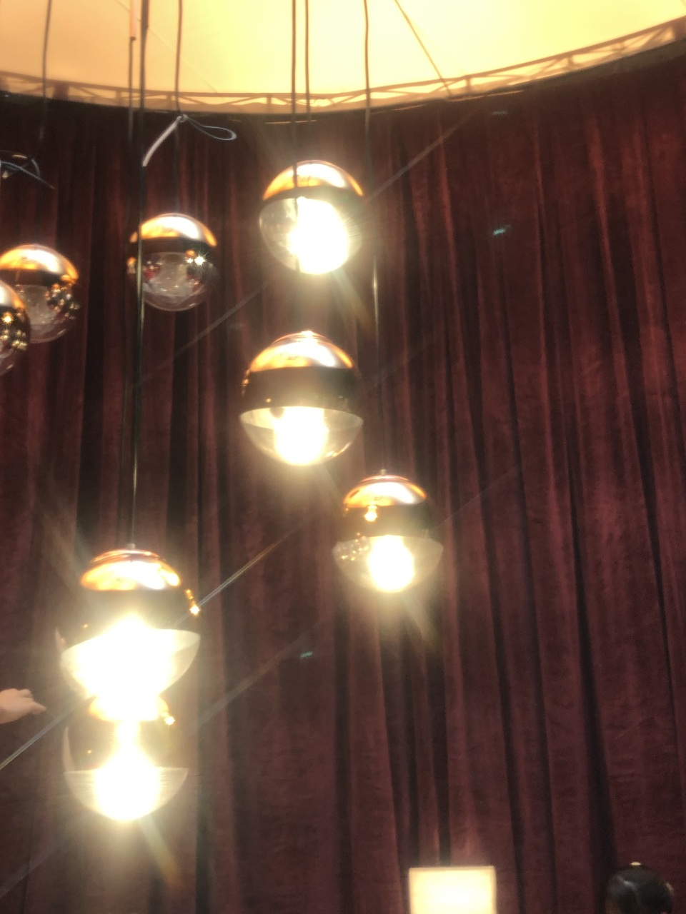
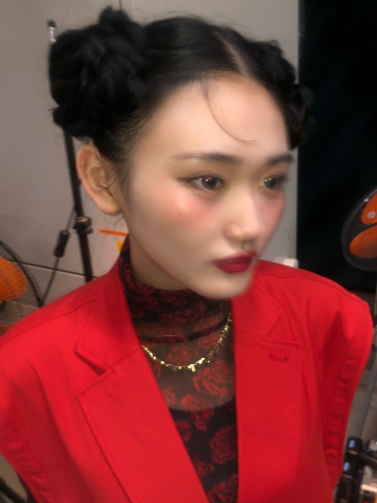
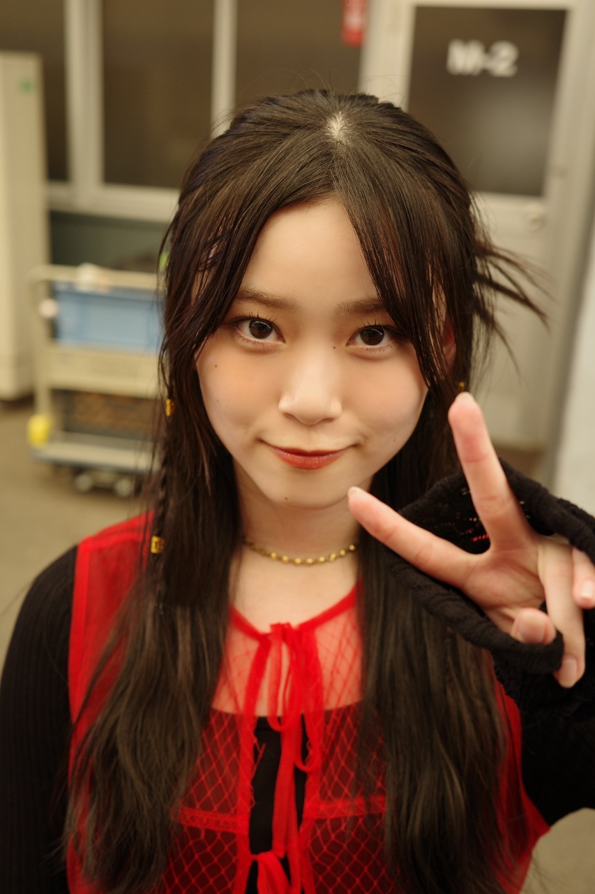
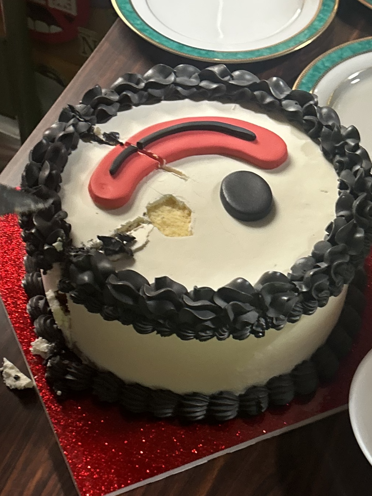
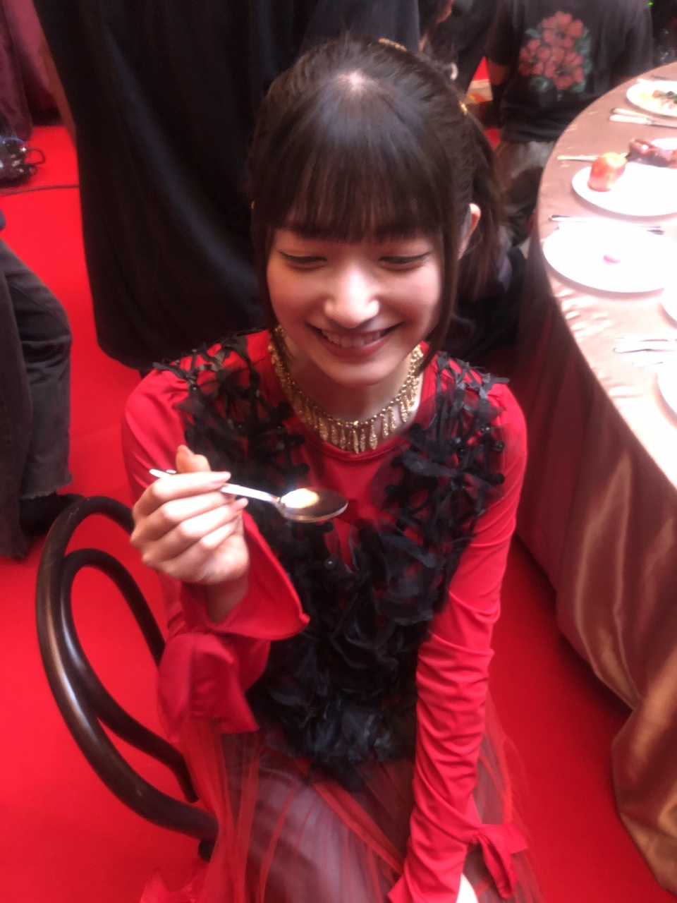
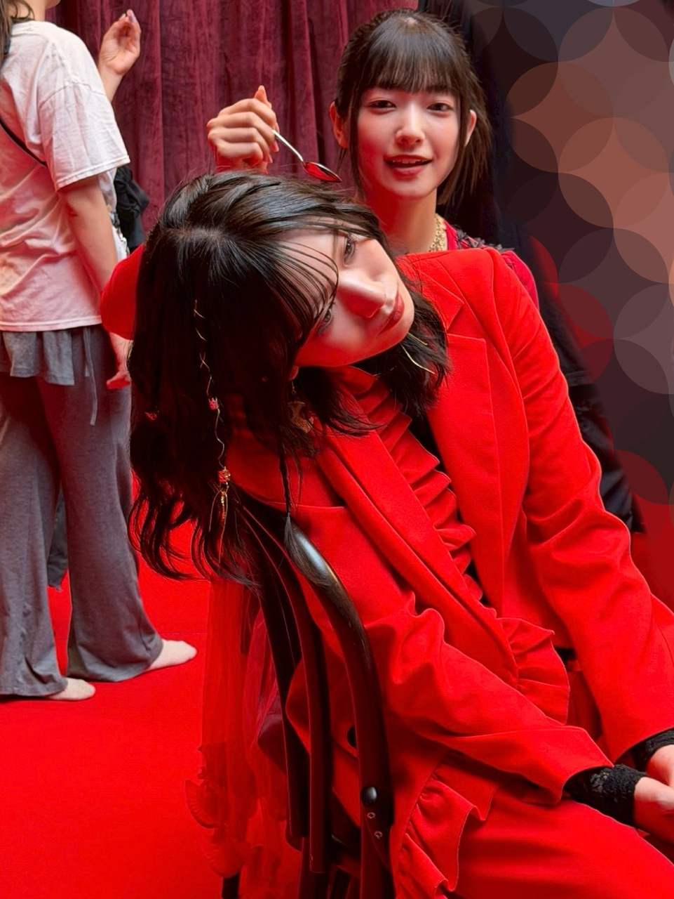
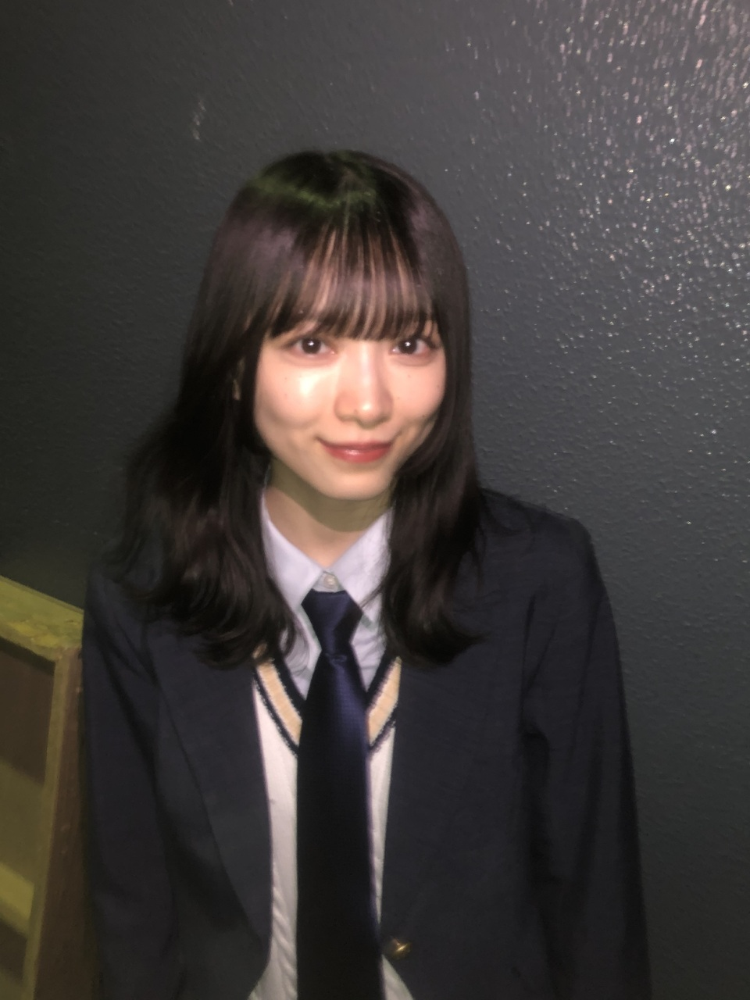
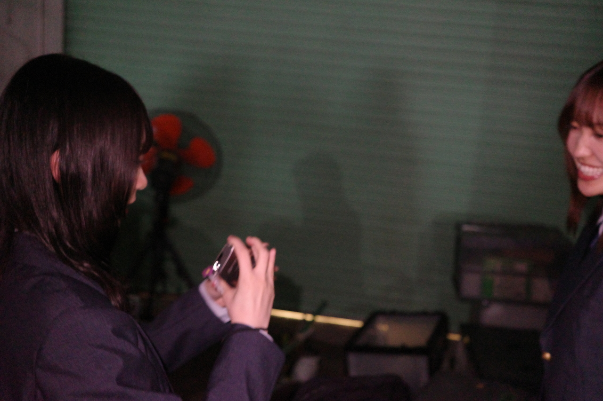

気持ちが仕上がっていて（？）
やっぱりミーグリ好きだな〜って思いました


会いに来てくれて、直接感謝の気持ちを伝えられる時間をくれてありがとうございます ！
明日と明後日も何を話そう！
楽しみ？
楽しみなの可愛いね
「Unhappy Birthday 構文」
https://youtu.be/hBfDlIN0WtI
「Alter ego」
https://youtu.be/gQ7l_hav-bA
「木枯らしは泣かない」
https://youtu.be/aQ1iXj4oXfI
「青空が見えるまで」
「I will be」
「夜空で一番輝いている星の名前を僕は知らない」
「Buddies（English Version）」
そう思ってないのに、空気読んでそう思ってる顔したことある
嬉しいふりしたこともあるし、
悲しいふりしたこともある
MVを通して懐かしい気持ち思い出しました







